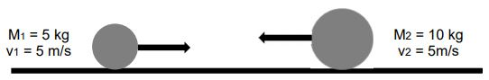
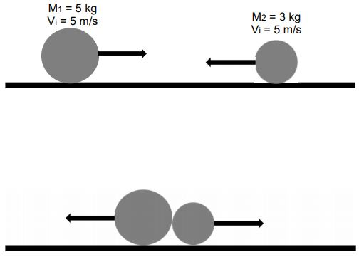

Les collisions (Solutions)
Situation de deux balles qui entrent en collision
a. Dans le cas d'une seule balle, comment la quantité de mouvement sera modifié si on...
Diminue la masse de la balle :
Diminue la quantité de mouvement
Augmente la vitesse de la balle :
Augmente la quantité de mouvement
Divise la masse par deux et on double la vitesse de la balle :
La quantité de mouvement reste la même
b. Dans le cas de deux balles sur un plan plat sans aucun frottement, comment peut-on garder la même quantité de mouvement si...

La masse 1 est doublée et la vitesse 1 change à 2 m/s :
m1iv1i + m2iv2i = m1fv1f + m2fv2f
(5)(5) + (10)(5) = (10)(2) + (10)v2f
25 + 50 = 20 + (10)v2f
55 = (10)v2f
v2f = 5,5 m/s
La masse 2 est divisée par deux et la masse 1 change à 3 kg :
m1iv1i + m2iv2i = m1fv1f + m2fv2f
(5)(5) + (10)(5) = (3)v1f + (5)2f
25 + 50 = (3)v1f + (5)v2f
75 = (3)v1f + (5)v2f
Plusieurs réponses sont possibles
La masse 1 et la masse 2 sont égales à 5 kg, tandis que la vitesse 2 est divisée par deux :
m1iv1i + m2iv2i = m1fv1f + m2fv2f
(5)(5) + (10)(5) = (5)v1f + (5)(2,5)
25 + 50 = (5)v1f + 12,5
62,5 = (5)v1f
v1f = 12,5 m/s
c. Une balle de 2 kg qui part du repos au sommet d'un plan incliné (sans frottement) de 45° entre en collision avec une balle de 5 kg (immobile au bas du plan incliné), quelle est la vitesse finale de la balle de 5 kg si la balle de 2kg s'arrête après la collision?
mgh = ½mv2
(2)(9,8) sin 45°(2) = ½ (2)v2
27,714 = v2
v = 5,26 m/s
m1iv1i + m2iv2i = m1fv1f + m2fv2f
(2)(5,26) + (5)(0) = (2)(0) + (5)v2f
10,52 = (5)v2f
v2f = 2,104 m/s
d. Refaire le calcul de la question c avec la deuxième loi de Newton. Comparez les réponses. Que remarquez-vous?
e. Une balle de 5 kg entre en collision avec une balle de 3 kg. Si la vitesse finale de la balle de 3 kg est trois fois plus grande que la vitesse finale de 5 kg, quelles sont leur vitesse finale?

Projet en physique de 4e session fait par Hugo Paré et Charles-Antoine Bussière, étudiants du CÉGEP de l'Outaouais